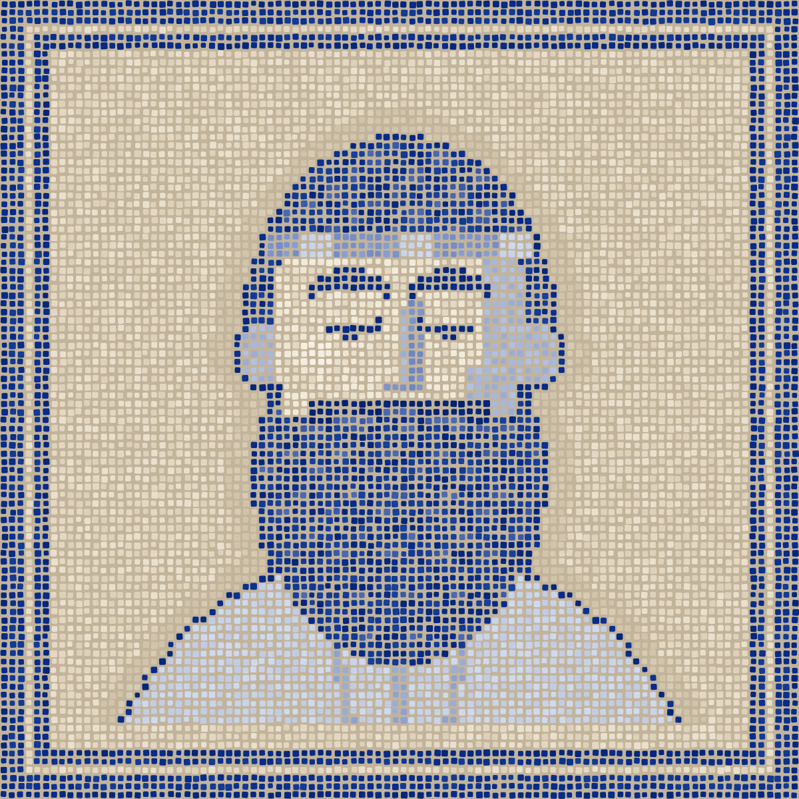

STRIPE_WEBHOOK_SECRET
.env.stagingread
.env.productionread
An agent skill that finds every drift between dev, staging and production, ranks it by risk, and never prints a secret.
npx skills add senavoh/parmenides
Then ask your agent: “is staging the same as prod?”
prod against staging demo app, real run
highSTRIPE_WEBHOOK_SECRETpresentmissing
highnode runtime2018
highpostgres16.415.8
highmigrations before deployrunskipped
mediumredis image7.4latest

His report opens with everything that already matches, so you know what was checked and is fine. In the demo: the same dependencies from one lockfile, the same env var keys except one, the same cookie and pool settings.
compare every env var key
1 key missing in prod: STRIPE_WEBHOOK_SECRET
check runtimes and image versions
node 20 against 18, postgres 16.4 against 15.8, redis on latest
never print a secret value
4 secrets compared, 0 values printed
leave out what you meant
4 expected differences, listed in .parmenides.yml, not counted as drift
rank every drift by risk
5 high, 4 medium, 0 low, from a real run on the demo app
STRIPE_WEBHOOK_SECRET
.env.stagingread
.env.productionread
First, it reads every environment.
STRIPE_WEBHOOK_SECRET
stagingpresent
prodmissing
Then it compares them, key by key.
STRIPE_WEBHOOK_SECRET high
stagingpresent
prodmissing
Add it to the prod secret store.
Then it ranks the drift and names the fix.
STRIPE_WEBHOOK_SECRET one
stagingpresent
prodpresent
No drift on this key.
Then you make them one.
No. It reads files and writes nothing unless you ask it to save the report as PARMENIDES.md. It never runs a deploy or touches a real environment.
It reads your env files to compare keys, the way your agent reads any file. It never prints a value: only same, differs or missing.
In per-environment files like .env.production, config/staging.yml, docker-compose.prod.yml, values-prod.yaml or prod.tfvars, or in branches, like staging against main.
Claude Code, Codex, Cursor, Gemini CLI, OpenCode, and any agent that reads SKILL.md files. No API key, no account.
List them in a .parmenides.yml (log levels, URLs, replica counts) and they stop counting as drift. A key that's missing still counts.
Yes. Open source under the MIT license. The only cost is your agent's own usage.
A Greek philosopher from Elea, born around 515 BC. His one surviving work is a poem, On Nature, where a goddess teaches him that what is, is one and unchanging.
Install the skill, open a project, and ask the question on the right. Nothing to host and no API key.